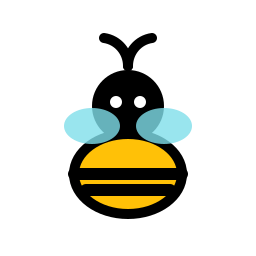

398 × 844 · 浅色
可交互
9:41

蜜蜂记账
日常生活⌄
2026年 11月⌄
CNY
本月支出
¥
3,286.50
本月收入
12,000.00
本月结余
8,713.50
本月预算 ¥5,000
剩余 ¥1,713.50
全部明细
32笔
星期五
支出 168.50
街角的一杯拿铁
随身钱包 · 日常
−26.50
晚餐的新鲜食材
日常银行卡 · 必需
−142.00
明细
洞察
记账
资产
我的
图片记账 · 日常生活
正在识别账单
整理金额、分类与备注
这次识别时间稍长，仍在继续处理。
返回
重试
已记账